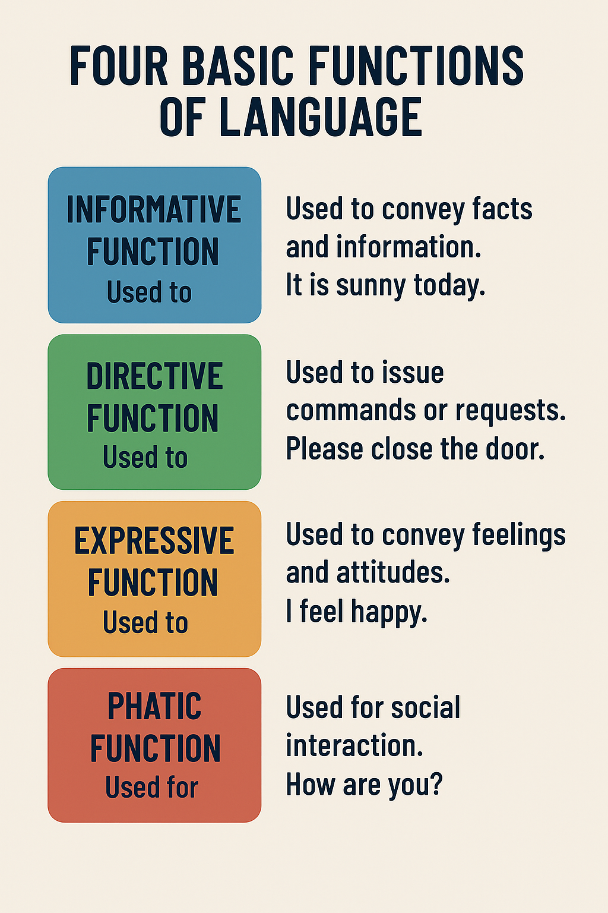

Day 1: Logic Basics and Language
Course Objectives
- Understand the definition and subject of logic
- Distinguish between statements and non-statements
- Identify premises and conclusions in arguments
- Understand different functions of language
What is Logic
Logic is the study of valid inference.
It focuses on the form and structure of arguments, rather than their content.
Logic helps us distinguish between good and bad arguments, thereby making more reasonable judgments and decisions.
Core Questions in Logic
- What is valid inference?
- How to evaluate the quality of arguments?
- How to avoid common logical fallacies?
Statements
Statements are sentences that can be judged as true or false.
For example:
- Taipei is the capital of Taiwan.
- The Earth revolves around the Sun.
- All humans are mortal.
Non-statements
Non-statements are sentences that cannot be judged as true or false.
For example:
- Please close the door. (Command)
- How is the weather today? (Question)
- What a beautiful scenery! (Exclamation)
- Happy birthday to you. (Expression of wish)
Argument Structure
An argument consists of a set of statements, some of which (premises) are used to support another statement (conclusion).
- Premise: A statement used to support the conclusion
- Conclusion: The statement that the argument attempts to prove or support
Example of an Argument
All humans are mortal. (Premise)
Socrates is human. (Premise)
Therefore, Socrates is mortal. (Conclusion)
Conclusion Indicators
In everyday language, there are certain words typically used to introduce conclusions, known as conclusion indicators.
Common conclusion indicators include:
- Therefore
- Thus
- Hence
- Consequently
- It follows that
Premise Indicators
Similarly, there are words typically used to introduce premises, known as premise indicators.
Common premise indicators include:
- Because
- Since
- Given that
- Considering that
Language Functions
Language has multiple functions, understanding these functions helps us better analyze and use language.
Informative Function of Language
The informative function of language is used to convey facts and information.
This is the function that logic is most concerned with, as it directly relates to truth-value judgments.
For example:
- Today is Monday.
- The chemical formula for water is H2O.
Other Functions of Language
- Directive Function: Used to issue commands or requests, guiding others to act.
- Expressive Function: Used to express emotions, attitudes, and feelings.
- Ceremonial Function: Used for social etiquette and ceremonial occasions.
Course Summary
In today's course, we learned:
- Logic is the study of valid inference
- Statements can be judged as true or false, while non-statements cannot
- Arguments consist of premises and conclusions, with premises supporting the conclusion
- Conclusion indicators and premise indicators help us identify the structure of arguments
- Language has multiple functions, including informative, directive, expressive, and ceremonial functions
Mind Map Overview